Page Appearance and Layout
In this chapter you will learn how to make your web pages attractive and professionally looking with the help of Twitter Bootstrap CSS Framework and how to position elements on a page using Laminas layout mechanism. You'll also become familiar with common view helpers allowing for composing web pages of reusable parts. If you are new to Twitter Bootstrap, it is also recommended that you refer to Appendix C. Introduction to Twitter Bootstrap for advanced description of Bootstrap capabilities.
Laminas components covered in this chapter:
| Component | Description |
|---|---|
@Laminas\Mvc |
Support of MVC pattern. Implements base controller classes, controller plugins, etc. |
@Laminas\View |
Implements the functionality for variable containers, rendering a web page and common view helpers. |
About CSS Stylesheets and Twitter Bootstrap
In a laminas-based web site, for defining the visual appearance and style of the web pages, CSS stylesheets are utilized. These CSS 1 files are typically stored in APP_DIR/public/css directory.
Because the CSS rules may be rather complex and require laborious adjustment and the skills of a designer, they can be separated in a "library" (framework). Analogous to PHP frameworks, CSS frameworks allow for code reusability.
Today, several CSS frameworks exist on the market, and one of them is Twitter Bootstrap (or shortly, the Bootstrap). Originally designed at Twitter to unify the appearance of their own web tools, Bootstrap has became a popular CSS framework, allowing to make your web site professionally looking and visually appealing, even if you don't have advanced designer skills and without the need of creating basic CSS rules (but, of course you can define your own custom CSS rules on top of Bootstrap to customize your site's appearance). Bootstrap is freely distributed under the Apache License v.2.0.
Twitter Bootstrap is shipped with Laminas Skeleton Application, so you can use it out of the box. Alternatively, you can download the newest version of Bootstrap from the project's official page. At the moment of writing this book, the latest version is v.3.x.
Generally, the Bootstrap does the following things:
-
It provides the CSS reset that is a style sheet defining styles for all possible HTML elements. This ensures your web site will look the same way in all web browsers.
-
It provides the base CSS rules that define style of typography (headings and text), tables, forms, buttons, images and so on.
-
It defines the grid system. The grid system allows to arrange elements on your web page in a grid-like structure. For example, look at the Skeleton Application's main page (figure 6.1), where we have the grid consisting of three columns.
-
It defines useful web interface components like dropdown menus, navigation bars, breadcrumbs, pagination and so on. For example, on the skeleton app's main page, there is the navigation bar component at the top, and the header (also called the Hero Unit or Jumbotron) component below the navbar. These components are very handy on any web site.
-
In includes the JavaScript extensions that allow to make Bootstrap-provided interface components more interactive. For example, JavaScript is used to animate dropdown menus and display "modal dialogs".
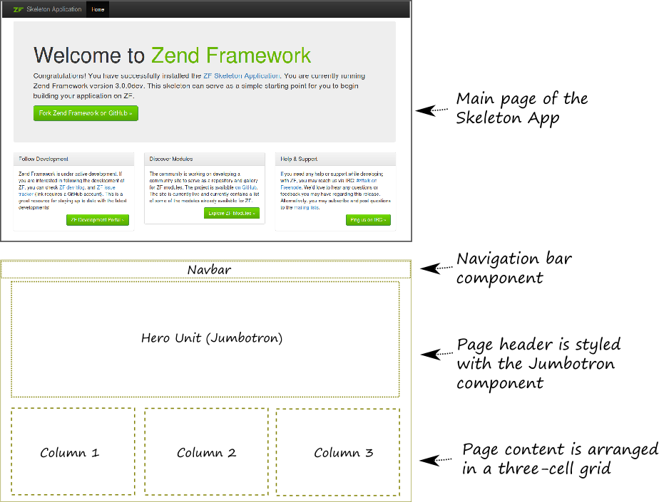
If you are new to Twitter Bootstrap, it is recommended that you refer to Appendix C. Introduction to Twitter Bootstrap, where you can find more information about using Twitter Bootstrap and its components.
Page Layout in Laminas Framework
Pages of your web site typically have some common structure that can be shared among them.
For example, a typical page has the <!DOCTYPE> declaration to identify the HTML document,
and the <head> and <body> elements:
<!DOCTYPE html>
<html lang="en">
<head>
<title>Welcome</title>
<!-- Include metas, stylesheets and scripts here -->
</head>
<body>
<!-- Include page content here -->
</body>
</html>
The <head> element contains the page title text, meta information
and references to included stylesheets and scripts. The <body> element
contains the content of the page, like the logo image, the navigation bar,
the page text, and the footer with copyright information.
In Laminas Framework, you define this common structure with the "master" view template called the layout. The layout "decorates" other view templates.
The layout template typically has a placeholder in which Laminas puts the content specific to a particular page (see figure 6.2 for example).
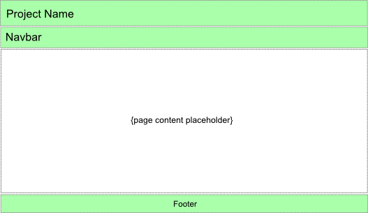
In the Skeleton Application, the default layout template file is called layout.phtml and is located inside of the view/layout directory in Application module's directory (see figure 6.3 for example).
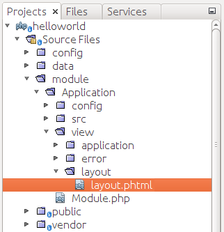
Let's look at the layout.phtml template file in more details. Below, the complete contents of the file is presented:
<?= $this->doctype() ?>
<html lang="en">
<head>
<meta charset="utf-8">
<?= $this->headTitle('ZF Skeleton Application')
->setSeparator(' - ')->setAutoEscape(false) ?>
<?= $this->headMeta()
->appendName('viewport', 'width=device-width, initial-scale=1.0')
->appendHttpEquiv('X-UA-Compatible', 'IE=edge')
?>
<!-- Le styles -->
<?= $this->headLink(['rel' => 'shortcut icon', 'type' => 'image/vnd.microsoft.icon',
'href' => $this->basePath() . '/img/favicon.ico'])
->prependStylesheet($this->basePath('css/style.css'))
->prependStylesheet($this->basePath('css/bootstrap-theme.min.css'))
->prependStylesheet($this->basePath('css/bootstrap.min.css'))
?>
<!-- Scripts -->
<?= $this->headScript()
->prependFile($this->basePath('js/bootstrap.min.js'))
->prependFile($this->basePath('js/jquery-2.2.4.min.js'))
?>
</head>
<body>
<nav class="navbar navbar-inverse navbar-fixed-top" role="navigation">
<div class="container">
<div class="navbar-header">
<button type="button" class="navbar-toggle" data-toggle="collapse"
data-target=".navbar-collapse">
<span class="icon-bar"></span>
<span class="icon-bar"></span>
<span class="icon-bar"></span>
</button>
<a class="navbar-brand" href="<?php echo $this->url('home') ?>">
<img src="<?= $this->basePath('img/zf-logo.png') ?>"
alt="Laminas Framework <?= \Application\Module::VERSION ?>"/>
Skeleton Application
</a>
</div>
<div class="collapse navbar-collapse">
<ul class="nav navbar-nav">
<li class="active">
<a href="<?= $this->url('home') ?>">Home</a>
</li>
</ul>
</div>
</div>
</nav>
<div class="container">
<?= $this->content; ?>
<hr>
<footer>
<p>© 2005 - <?= date('Y') ?> by Laminas Technologies Ltd.
All rights reserved.
</p>
</footer>
</div>
<?= $this->inlineScript() ?>
</body>
</html>
You can see that the layout.phtml file (as a usual view template) consists of HTML tags mixed with PHP code fragments. When the template is being rendered, Laminas evaluates the inline PHP fragments and generates resulting HTML page visible to site users.
Line 1 above generates the <!DOCTYPE> 2 declaration of the HTML page
with the @Doctype view helper.
Line 3 defines the <html> element representing the root of the HTML document.
The <html> tag is followed by the <head> tag (line 4), which typically
contains a title for the document, and can include other information like scripts,
CSS styles and meta information.
In line 5, the <meta> tag provides the browser with a hint that the document
is encoded using UTF-8 3 character encoding.
In line 6, we have the @HeadTitle view helper that allows to define the title for the
page ("ZF Skeleton Application"). The title will be displayed in the web browser's caption.
The setSeparator() method is used to define the separator character for the compound page
titles4; the setAutoEscape() method enhances the security by escaping unsafe characters from
the page title.
In line 9, the @HeadMeta view helper allows to define the <meta name="viewport">
tag containing meta information for the web browser to control layout on different display
devices, including mobile browsers. The width property controls the size of the
viewport, while the initial-scale property controls the zoom level when the page
is loaded. This makes the web page layout "responsive" to device viewport size.
In line 15, the @HeadLink view helper allows to define the <link> tags.
With the <link> tags, you typically define the "favicon" for the page
(located in APP_DATA/public/img/favicon.ico file)
and the CSS stylesheets.
In lines 17-19, the stylesheets common to all site pages are included by
the prependStylesheet() method of the @HeadLink view helper. Any page
in our website will load three CSS stylesheet files: bootstrap.min.css
(the minified version of Twitter Bootstrap CSS Framework),
bootstrap-theme.min.css (the minified Bootstrap theme stylesheet)
and style.css (CSS file allowing us to define our own CSS rules overriding
Bootstrap CSS rules).
Lines 23-25 include the JavaScript files that all your web pages will load.
The scripts are executed by the client's web browser, allowing
to introduce some interactive features for your pages. We use the bootstrap.min.js
(minified version of Twitter Bootstrap) and jquery-2.2.4.min.js (minified version of
jQuery library) scripts. All scripts are located in APP_DIR/public/js directory.
Line 28 defines the <body> tag, the document's body which contains all
the contents of the document, such as the navigation bar, text, hyperlinks,
images, tables, lists, etc.
In lines 29-52, you can recognize the Bootstrap navigation bar definition. The skeleton application uses the collapsible navbar with dark inverse theme. The navbar contains the single link Home.
If you look at lines 53-61, you should notice the <div> element with container class
which denotes the container element for the grid system. So, you can use the Bootstrap
grid system to arrange the contents of your pages.
Line 54 is very important, because this line defines the inline PHP code that represents the page content placeholder we talked about in the beginning of this section. When the Laminas page renderer evaluates the layout template, it echoes the actual page content here.
Lines 56-60 define the page footer area. The footer contains the copyright information like "2016 by Laminas Technologies Ltd. All rights reserved." You can replace this information with you own company name.
Line 62 is the placeholder for JavaScript scripts loaded by the
concrete page. The @InlineScript view helper will substitute here
all the scripts you register (about registering JavaScript scripts,
you will see it later in this chapter).
And finally, lines 63-64 contain the closing tags for the body and the HTML document.
Modifying the Default Page Layout
To demonstrate how you can define your own page layout, we will modify the original layout of the Laminas Skeleton Application website. We want to make it display the "Hello world" page title, the "Hello world!" header text at the top, the navigation bar and breadcrumbs below the header, page content placeholder in the middle of the page, and the footer with the copyright information at the bottom (see figure 6.4 for an example of what we are trying to achieve).
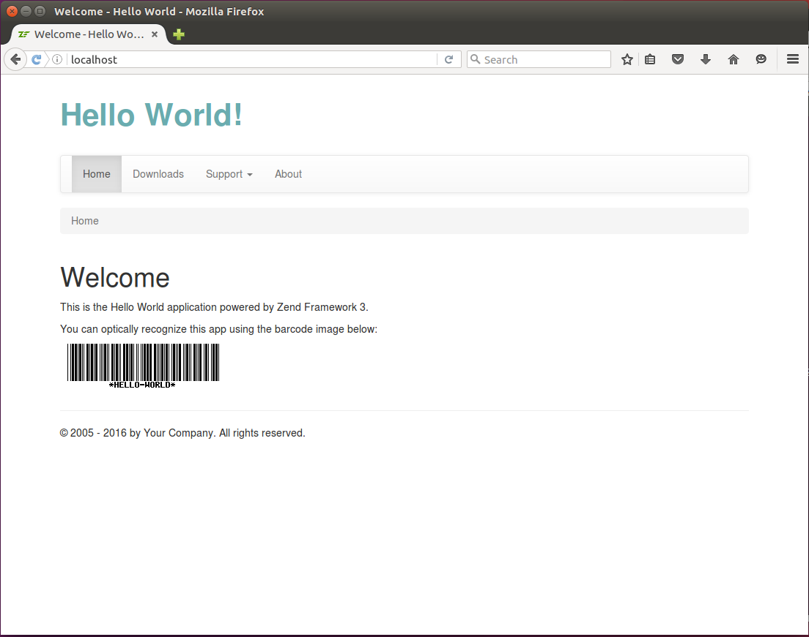
Let's start with the "Hello World" page title. We replace the lines 6-7 in the layout.phtml file as follows:
<?= $this->headTitle('Hello World')->setSeparator(' - ')->setAutoEscape(false) ?>
Next, we will use the Bootstrap-provided grid system for arranging the main blocks on the page.
Replace the HTML code of the <body> element (lines 28-63) with the following one:
<body>
<div class="container">
<div class="row">
<!-- Page header -->
<div class="col-md-4">
<div class="app-caption">Hello World!</div>
</div>
</div>
<div class="row">
<div class="col-md-12">
<!-- Navigation bar -->
</div>
</div>
<div class="row">
<div class="col-md-12">
<!-- Breadcrumbs -->
</div>
</div>
<div class="row">
<div class="col-md-12">
<!-- Page content placeholder -->
<?= $this->content; ?>
</div>
</div>
<div class="row">
<div class="col-md-12">
<hr>
<p>© 2005 - <?= date('Y') ?> by Your Company. All rights reserved.</p>
</div>
</div> <!-- /container -->
<?php echo $this->inlineScript() ?>
</body>
In the code above, we defined the <div> element with the container class and put
the <div> elements of the grid inside of it. The grid consists of 5 rows:
-
The page header containing the "Hello World!" text (lines 3-8). The header text spans four grid columns. For styling the text, we use our custom CSS class
app-caption(we will define this class in style.css file a little bit later). -
We left the space for navigation bar interface component in line 11.
-
In line 16, we have the space for breadcrumbs component.
-
In line 22, we have the page content placeholder. When the renderer evaluates the page, it will echo the value of the
$contentvariable, so the actual page content will be substituted here. -
And in lines 25-29, we provided the page footer with the text "(c) 2013 by Your Company. All rights reserved." You can change this text and substitute your company name here, if you wish.
Next, we put the navigation bar in the corresponding grid row:
<!-- Navigation bar -->
<nav class="navbar navbar-default" role="navigation">
<div class="collapse navbar-collapse navbar-ex1-collapse">
<ul class="nav navbar-nav">
<li class="active">
<a href="<?= $this->url('home') ?>">Home</a>
</li>
<li>
<a href="<?= $this->url('application', ['action'=>'downloads']) ?>">
Downloads
</a>
</li>
<li class="dropdown">
<a href="#" class="dropdown-toggle" data-toggle="dropdown">
Support <b class="caret"></b>
<ul class="dropdown-menu">
<li>
<a href="<?= $this->url('doc', ['page'=>'contents']) ?>">
Documentation
</a>
</li>
<li>
<a href="<?= $this->url('static', ['page'=>'help']) ?>">
Help
</a>
</li>
</ul>
</a>
</li>
<li>
<a href="<?= $this->url('about') ?>">About</a>
</li>
</ul>
</div>
</nav>
In the code above, we used the navbar interface component provided by the Bootstrap.
We also used the @Url[Laminas\View\Helper\Url] view helper to insert the links to the navigation items.
We discussed the usage of the @
Url[Laminas\View\Helper\Url] view helper in the Generating URLs from Route section in Routing.
Next, put the breadcrumbs component to the corresponding grid row:
<!-- Breadcrumbs -->
<ol class="breadcrumb">
<li class="active">Home</li>
</ol>
Finally, we need to provide a couple of custom CSS rules to fine-tune the look and feel. We define our own CSS rules in the style.css stylesheet.
We want to make the "Hello World!" header text to use larger bold font and use a nice looking color. To do this, open the style.css file, and append the following lines to the end:
div.app-caption {
padding: 25px 0px;
font-size: 3.0em;
font-weight: bold;
color: #6aacaf
}
In the CSS code above, we created the app-caption class which can be applied to <div>
element and defining the 25 pixels vertical padding, large font size, bold text style and the
hexadecimal representation of the RGB text color.
By default, in skeleton application, the navbar is pinned to page top, and the CSS
rule for the page body defines the 20 pixels top padding to leave space for it.
Since in our Hello World example we've unpinned the navigation bar from top of the page and
placed it in page flow, we need to remove the padding from page body top. To do that, edit
the body CSS rule in the style.css file and make it look like the one below:
body {
padding-bottom: 40px;
}
Great, we've completed the page layout template! To see the result of our changes, open the site in your browser, you should see the page as in figure 6.4. You can click the links in navigation bar to visit the pages like About or Documentation, etc. The content of a particular page is put into the content placeholder of our layout.
The result can be seen in action in the Hello World sample application that is part of this book's example code available on GitHub.
Switching between Layouts
By default, Laminas provides you with a single layout template layout.phtml. In real-life applications, you will probably need to have several layouts and switch the layout for certain controller/action.
For example, you may have a front-end and a back-end part of your site. The front-end part would consist of web pages publicly visible to all users and would utilize the default layout for all of these pages. The back-end part would consist of pages visible to the administrator user only and utilize another layout template containing the administrative menu.
First, prepare another layout template file. For example, call it layout2.phtml. To simplify the file preparation, copy the content of the default layout.phtml file and make the necessary changes.
When the second layout template is ready, you can switch between layouts for a particular controller's action by using the following code:
// A controller's action method that uses an alternative
// layout template.
public function indexAction()
{
//...
// Use the Layout plugin to access the ViewModel
// object associated with layout template.
$this->layout()->setTemplate('layout/layout2');
//...
}
In the example action method above, we use the @Layout[Laminas\Mvc\Controller\Plugin\Layout] controller plugin (line 9)
that allows to access the instance of the @ViewModel[Laminas\View\Model\ViewModel] class associated with the
layout template. To change the layout template for this particular action method,
we called the setTemplate() method provided by the ViewModel class.
In addition to the @
Layout[Laminas\Mvc\Controller\Plugin\Layout] controller plugin, there is the @Layout[Laminas\View\Helper\Layout] view helper which provides the same capabilities. With the @Layout[Laminas\View\Helper\Layout] view helper, you can, for example, switch layout from the "static" page which has no specific controller action.
Setting Layout for All Actions of a Controller
If all action methods of a controller class need to use the same alternative layout,
you can override the onDispatch() method of the @AbstractActionController
class and call the setTemplate() method there, as shown in the example below:
// Add this alias in the beginning of the controller file
use Laminas\Mvc\MvcEvent;
// ...
class IndexController extends AbstractActionController
{
/**
* We override the parent class' onDispatch() method to
* set an alternative layout for all actions in this controller.
*/
public function onDispatch(MvcEvent $e)
{
// Call the base class' onDispatch() first and grab the response
$response = parent::onDispatch($e);
// Set alternative layout
$this->layout()->setTemplate('layout/layout2');
// Return the response
return $response;
}
}
Partial Views
A partial view is a .phtml view template file which can be rendered by another view template. Partial views allow to compose your page of pieces and reuse pieces of view rendering logic across different view templates.
For a simple example of partial view usage, let's imagine that we need to render a table of some products. Each product has the ID, the name and the price. We can use partial view template to render a single row of the table several times.
First, let's add the partialDemoAction() method to the Index controller:
// An action that demonstrates the usage of partial views.
public function partialDemoAction()
{
$products = [
[
'id' => 1,
'name' => 'Digital Camera',
'price' => 99.95,
],
[
'id' => 2,
'name' => 'Tripod',
'price' => 29.95,
],
[
'id' => 3,
'name' => 'Camera Case',
'price' => 2.99,
],
[
'id' => 4,
'name' => 'Batteries',
'price' => 39.99,
],
[
'id' => 5,
'name' => 'Charger',
'price' => 29.99,
],
];
return new ViewModel(['products' => $products]);
}
The action method above just prepares an array of products
for rendering and passes it to the view template with
the help of the @ViewModel[Laminas\View\Model\ViewModel] variable container.
Next, add the partial-demo.phtml template file:
<?php
$this->headTitle('Partial View Demo');
?>
<h1>Partial View Demo</h1>
<p>
Below, the table of products is presented. It is rendered with the help of
partial views.
</p>
<table class="table table-striped table-hover">
<tr>
<th>ID</th>
<th>Product</th>
<th>Price</th>
</tr>
<?php
foreach ($this->products as $product) {
echo $this->partial('application/index/table-row', ['product'=>$product]);
}
?>
</table>
In the view template above, we define the markup for the table of products
(lines 10-22). In line 18, we walk through the items of the products
array and render each row with the @Partial view helper.
The first argument of the @Partial view helper is the name of the partial
view template file ("application/index/table-row").
The second argument of the @Partial view helper should be an array of arguments
passed to the view template. They will be accessible the same way as if you would pass
them with the @ViewModel[Laminas\View\Model\ViewModel] variable container.
Finally, create the table-row.phtml view template, which will be used as the partial view template:
<tr>
<td> <?= $this->product['id'] ?> </td>
<td> <?= $this->product['name'] ?> </td>
<td> <?= $this->product['price'] ?> </td>
</tr>
In the view template above, we just render a single row of the table.
To see the resulting web page, type "http://localhost/application/partial-demo" URL in your browser's navigation bar. You should see something like in figure 6.5.
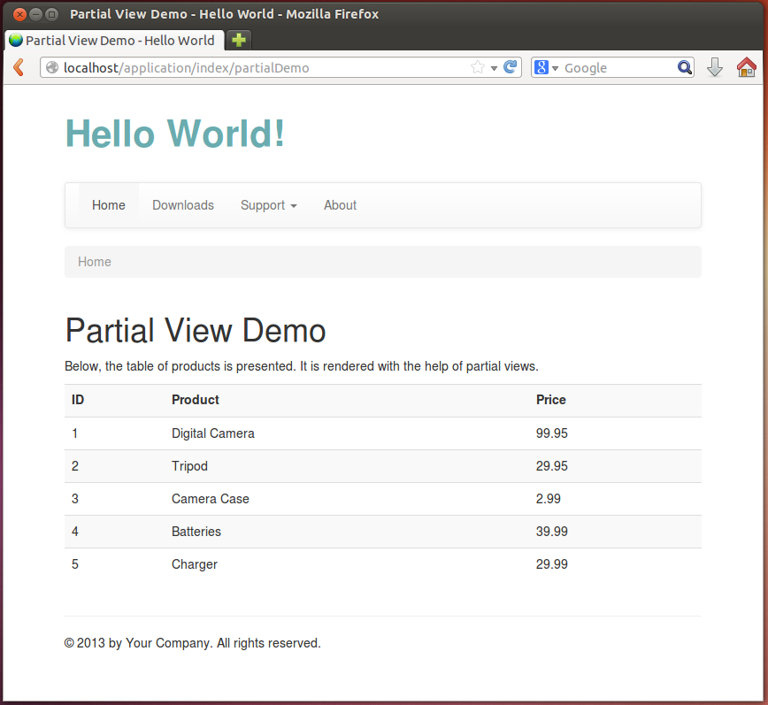
Placeholder View Helper
The @Placeholder[Laminas\View\Helper\Placeholder] is another useful view helper allowing for capturing HTML
content and storing 5 it for later use. Thus, analogous to the @Partial
view helper, it allows to compose your page of several pieces.
For example, you can use the @Placeholder[Laminas\View\Helper\Placeholder] view helper in pair with the @Partial
view helper to "decorate" the content of a view template with another view template. A useful
practical application for this is layout "inheritance".
Imagine the situation, when you need to create an alternative layout which has exactly the same head section, header and the footer, but has differences in the middle page section. The "brute force" way for making such a layout would be to copy and paste the content of the original layout template, and make necessary changes. Another (better) way is "inheriting" the original one, when the resulting layout will reuse the common parts.
To demonstrate how to inherit a layout, we will create the layout2.phtml view template, which will inherit the default layout.phtml template, and add the Ads bar at the right of the page. Keeping ads in layout would be useful, if you plan to profit from displaying commercial ads on all (or on most) pages of your site.
Put the following code in the layout2.phtml template file:
<?php $this->placeholder('content')->captureStart(); ?>
<div class="row">
<div class="col-md-8">
<?= $this->content; ?>
</div>
<div class="col-md-4">
<div class="panel panel-default">
<div class="panel-heading">
<h3 class="panel-title">Ads</h3>
</div>
<div class="panel-body">
<strong>Laminas Framework Book</strong>
<p>Learn how to create modern web applications with PHP
and Laminas Framework</p>
<a target="_blank"
href="https://github.com/olegkrivtsov/using-laminas-framework-book">
Learn More
</a>
</div>
</div>
</div>
</div>
<?php
$this->placeholder('content')->captureEnd();
echo $this->partial('layout/layout',
['content'=>$this->placeholder('content')]);
?>
In the code above, we call the captureStart() method (line 1) and captureEnd()
method (line 26) of the @Placeholder[Laminas\View\Helper\Placeholder] view helper to delimit the HTML markup that
will be captured by the view helper and stored in its internal storage (instead
of rendering to PHP standard output stream).
In lines 3-23, we put the markup of the "inherited" layout. The derived layout uses the two-cell grid. The first cell of the grid (spanning 8 columns) will contain the actual content of a certain page, and the second cell (spanning 4 columns) will contain advertisements. For styling the ads, we utilize the Panel interface component provided by the Twitter Bootstrap.
In line 27, we use the @Partial view helper which is used to render the "parent"
layout (layout.phtml). We pass the content captured by the @Placeholder[Laminas\View\Helper\Placeholder] view
helper to the @Partial view helper as the second argument.
This way, we produced the nice-looking layout which inherits the default layout and improves the code reusability.
Now, if you set the layout2.phtml for all actions of, say Index controller, you should be able to see the result as in figure 6.6.
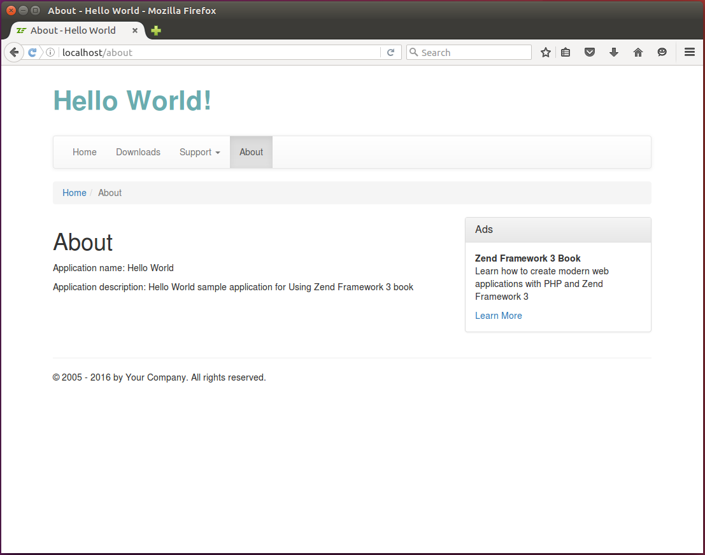
Adding Scripts to a Web Page
JavaScript code can be inserted into HTML pages and make them interactive.
Scripts should be inserted to an HTML file between <script> and </script> tags.
Below, an example JavaScript code is presented:
<script type="text/javascript">
// Show a simple alert window with the "Hello World!" text.
$(document).ready(function() {
alert('Hello World!');
});
</script>
In the example above, we created the <script> element, and put the jQuery callback function in it.
The jQuery binds a function to be executed when the DOM has finished loading. When the function is executed, a simple
alert window with the "Hello World!" text and OK button will appear.
Since you put this JavaScript code inside the HTML file, we will refer to it as inline script.
An alternative way of storing JavaScript code is putting it in an external .js file.
External files typically contain code that is designed to be used by
several web pages. Typically, external JavaScript files are stored in APP_DIR/public/js/ directory. To link
an external JS file to your HTML page, you add the <script> element like below:
<script type="text/javascript" src="/js/yourscript.js"></script>
When the browser encounter such a <script> element, it reads the external JS file
and executes the code.
Generally, there are two places inside an HTML file where you can put the script:
-
JavaScript code can be put in the
<head>section of an HTML page. This method is recommended to use when you need JavaScript to be loaded before the content of the page. We used this method for loading the Twitter Bootstrap JavaScript extensions and jQuery library. -
Script can be placed at the bottom of the
<body>section of an HTML page, just before the closing</body>tag. This way is acceptable when you need the entire DOM6 to be loaded before the script can start executing.
If a certain JavaScript file needs to be used on all (or on most) of the web pages, it is better to place it in layout view template. But when a script needs to be used on a single page only, putting it in the layout template is not the best idea. If you put such a script to layout template, the script will be loaded to all pages, which can produce an unneeded traffic and increase page load time for the whole site. To avoid this, you can add such a script for the desired page only.
To add a page-specific script which will be put in the <head> section of the web page,
you use the @HeadScript view helper. Its methods are summarized by table 6.1:
| Method name | Description |
|---|---|
appendFile() |
Puts a link to external JS file after all others. |
offsetSetFile() |
Inserts a link to external JS file in a given list position. |
prependFile() |
Puts a link to external JS file before all others. |
setFile() |
Clears the list of scripts and puts the single external JS file in it. |
appendScript() |
Puts an inline script after all others. |
offsetSetScript() |
Inserts an inline script to a given list position. |
prependScript() |
Puts an inline script before all others. |
setScript() |
Clears the list of inline scripts and puts the single inline |
| script in it. |
Table 6.1
To add a link to external JS file to the <head> section, of a page, you add the following PHP
code in the beginning of your view template (.phtml) file:
<?php
$this->headScript()->appendFile('/js/yourscript.js', 'text/javascript');
?>
In the code above, we called the appendFile() method of the @HeadScript view helper.
This method takes two arguments. The first one is the path to external JS file (if the
file is stored inside of APP_DIR/public/js directory, or an URL of a JS file if the file
is located on another web server). The second argument is the type of the script
(it is typically equal to "text/javascript").
Other methods provided by @HeadScript view helper (such as prependFile(), offsetSetFile() and
setFile()) differentiate only in the position in the list of scripts into which the new script will
be inserted.
The methods prependScript(), appendScript(), offsetSetScript() and setScript()
are designed to insert an inline JavaScript code. They are rarely used, because
you typically insert external JS scripts in the head section of the document
To insert a script to the end of the <body> section of the document, you can use the
@InlineScript view helper 7. It provides exactly the same methods as the
@HeadScript view helper. Below, an example is presented which can be used to append an
inline JavaScript code to the end of document body:
<?php
$script = <<<EOT
$(document).ready(function() {
alert('Hello World!');
});
EOT;
$this->inlineScript()->appendScript($script);
In the example above, we used the PHP's Heredoc 8 syntax to fill in the $script
variable with the inline JavaScript code. Then we call the appendScript() function on
the @InlineScript view helper and pass the code as its argument.
But, using the @InlineScript view helper may be not very convenient in sense of readability.
Moreover, NetBeans IDE syntax checker will be stuck on the Heredoc notation
and will not recognize the JavaScript code. To fix this, you can simply put the <script>
element at the bottom of your view template, as shown in the example below:
<!-- Page content goes first -->
<!-- Inline script goes last -->
<script type="text/javascript">
$(document).ready(function() {
// Show a simple alert window with the "Hello World!" text.
alert("Hello World!");
});
</script>
This ensures the same effect is achieved as with @InlineScript view helper, but allows for
better script readability and automatic syntax checking in NetBeans IDE.
For @
HeadScriptand @InlineScriptview helpers to work, you should ensure their content is echoed in layout view template (look at lines 23 and 62 of layout.phtml file). If you remove those lines from the layout template, the scripts won't be inserted in the web page.
Example
For a real-life example of inserting a JavaScript code in your web page, let's add a page with auto-complete feature. With this feature, the web browser will predict a word or phrase that the user wants to type in by several first letters, without the user actually entering the text completely. We can use an auxiliary JavaScript library called Twitter Typeahead. Analogous to Twitter Bootstrap, the Typeahead library was developed in Twitter Inc. for their internal purposes and is distributed freely.
Download typeahead.min.js file (a minified version of the Typeahead library) from the official project page. When the download is finished, place the file in your APP_DIR/public/js directory.
Then add the typeahead.phtml file in your application/index/static subdirectory
under the module's view directory.
This directory is served by the StaticRoute route type that we've created and configured
earlier in chapter Routing, and all "static" pages placed here will
automatically become available to site users.
In the typeahead.phtml view template file, put the following content:
<?php
$this->headTitle('Typeahead');
// Add a JavaScript file
$this->headScript()->appendFile('/js/typeahead.min.js', 'text/javascript');
?>
<h1>Typeahead</h1>
<p>Type a continent name (e.g. Africa) in the text field below:</p>
<input type="text" class="typeahead" title="Type here"/>
<script type="text/javascript">
$(document).ready(function() {
$('input.typeahead').typeahead({
name: 'continents',
local: [
'Africa',
'Antarctica',
'Asia',
'Europe',
'South America',
'North America'
]
});
});
</script>
In the code above, we set the title for the page (line 2), then
we append the typeahead.min.js file to the <head> section of the
page with the @HeadScript view helper (line 4).
In line 9, we create a text input field where the user will be able to
enter some text. We mark the input field with the typeahead CSS class.
Lines 11-25 contain inline JavaScript code placed at the bottom of the
view template (we don't use @InlineScript view helper for better code
readability).
In line 12, we have the jQuery event handler bound to the "document is ready" event. This event is fired when the complete DOM tree has been loaded.
In line 13, we have the jQuery selector ("input.typeahead") which selects
all input fields marked with the typeahead CSS class and execute the typeahead()
function on them.
The typeahead() function binds the change event handler to the text
input field. Once the user enters a character in the field, the handler is executed
and checks the letters entered. It then displays the dropdown menu with suggested
auto-completion variants.
The typeahead() function takes two arguments: the name argument identifies
the dataset, and the local argument is a JSON array containing the available
auto-completion variants.
To give the auto-completion field and its dropdown menu a nice-looking visual appearance, add the following CSS rules to your style.css file.
.typeahead,
.tt-query,
.tt-hint {
width: 396px;
height: 30px;
padding: 0px 12px;
font-size: 1.1em;
border: 2px solid #ccc;
border-radius: 4px;
outline: none;
}
.tt-dropdown-menu {
width: 422px;
margin-top: 12px;
padding: 8px 0;
background-color: #fff;
border: 1px solid #ccc;
border: 1px solid rgba(0, 0, 0, 0.2);
border-radius: 4px;
}
.tt-suggestion {
padding: 3px 20px;
font-size: 1.1em;
line-height: 24px;
}
.tt-suggestion.tt-is-under-cursor {
color: #fff;
background-color: #0097cf;
}
.tt-suggestion p {
margin: 0;
}
To see the auto-completion feature in work, type the "http://localhost/typeahead" URL in your browser and press Enter. The Typeahead page will appear with the prompt to enter a continent name. For example, type a letter to see how Typeahead suggests you available variants (figure 6.7).
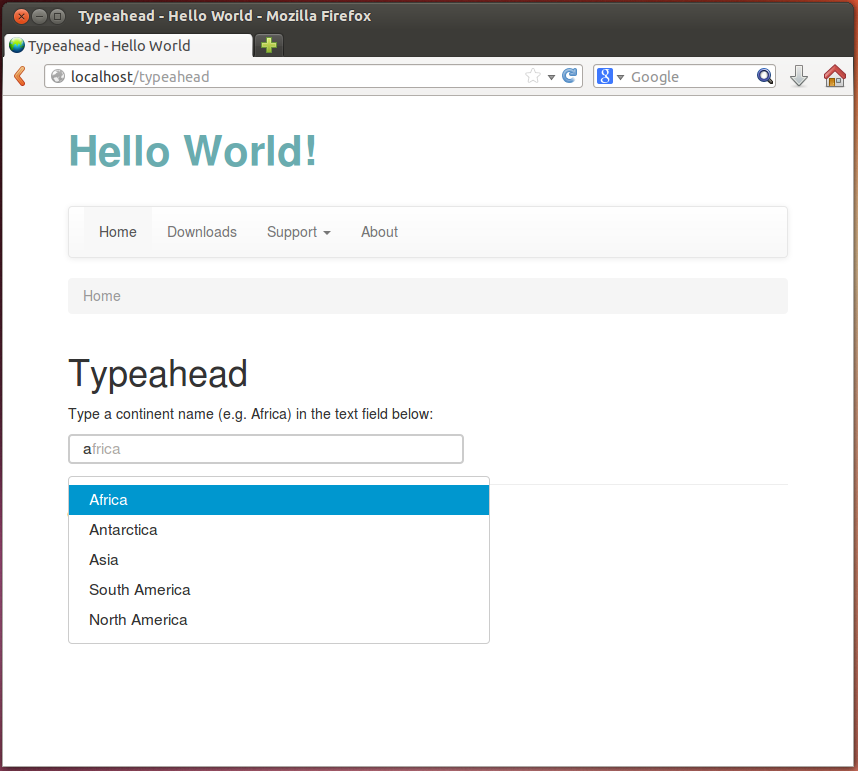
You can see this example working in the Hello World sample bundled with this book by typing the URL "http://localhost/typeahead" in your browser.
Adding CSS Stylesheets to a Web Page
CSS stylesheets are typically placed to the <head> section of an HTML document, either as a link to an
external file (external CSS stylesheet files are usually stored in APP_DIR/public/css directory.)
<link rel="stylesheet" type="text/css" href="/css/style.css">
or as an inline <style> element
<style>
body {
padding-top: 60px;
padding-bottom: 40px;
}
</style>
To store the CSS rules, external CSS stylesheets are recommended. For example, the base CSS rules provided by Twitter Bootstrap CSS framework are loaded from bootstrap.min.css and bootstrap-theme.min.css files. Custom site-specific CSS rules can be stored in style.css file. Since you need this CSS stylesheets for most of your pages, it is better to link them in the head section of the layout template. But, if a certain CSS stylesheet needs to be loaded for a single page only, you place it on that page's view template.
To add an external CSS stylesheet to a view template, you use the @HeadLink view helper:
<?php
$this->headLink()->appendStylesheet('/css/style.css');
$this->headLink()->appendStylesheet(
'//code.jquery.com/ui/1.10.3/themes/smoothness/jquery-ui.css');
In the example code above, we used the appendStylesheet() method of the @HeadLink view helper to
add an external CSS stylesheet to the head section of the document. The method accepts
a path to local CSS file (line 2) or a URL to CSS file located on another server (line 3).
The summary of @HeadLink view helper's methods is provided in table 6.2.
| Method name | Description |
|---|---|
appendStylesheet() |
Puts a link to CSS stylesheet file after all others. |
offsetSetStylesheet() |
Inserts a link to CSS stylesheet file in a given list position. |
prependStylesheet() |
Puts a link to external CSS stylesheet file before all others. |
setStylesheet() |
Clears the list and puts the single CSS file instead. |
Table 6.2
If you want to add an inline <style> element in the head section of the document, you can
use the @HeadStyle view helper. Its methods are presented in table 6.3 below:
| Method name | Description |
|---|---|
appendStyle() |
Adds a CSS stylesheet inline after all others. |
offsetSetStyle() |
Inserts a CSS stylesheet inline in a given list position. |
prependStyle() |
Puts a CSS stylesheet inline before all others. |
setStyle() |
Clears the list and puts the single CSS stylesheet inline instead. |
Table 6.3
Example
To demonstrate how to add a CSS stylesheet to your web page, we will take a real-life example. Assume you need to let the user the ability to type a date (in YYYY-MM-DD format) in a text input field. You would like to improve user experience by not just letting him to type the date, but also by selecting it from a pop-up date-picker widget.
To achieve this goal, you can use a third-party library called jQuery UI 9. To integrate jQuery UI in your page, you need to download two files from the official project page:
-
jquery-ui.min.js -- the minified version of jQuery UI JavaScript code;
-
jquery-ui.min.css -- the minified version of jQuery UI theming styles.
Put the jquery-ui.min.js file to APP_DIR/public/js, and jquery-ui.min.css file to APP_DIR/public/css. Finally, add the datepicker.phtml view template to the application/index/static directory under the module's view directory:
<?php
$this->headTitle('Datepicker');
$this->headScript()->appendFile('/js/jquery-ui.min.js', 'text/javascript');
$this->headLink()->appendStylesheet('/css/jquery-ui.min.css');
?>
<h1>Datepicker</h1>
<p>
Click the edit box below to show the datepicker.
</p>
<input type="text" class="datepicker" title="Type here"/>
<script>
$(document).ready(function() {
$("input.datepicker").datepicker({ dateFormat: 'yy-mm-dd' });
});
</script>
In the example above, we use the @HeadScript view helper's appendFile()
method (line 4) to add the link to jquery-ui.min.js file to the head section of the document.
In line 5, we used the @HeadLink view helper's appendStylesheet()
method to add the link to jquery-ui.min.css CSS stylesheet to the head section of the document.
In line 14, we added the text input field which will be used to enter the date.
In line 16-20, we added an inline JavaScript code for binding jQuery event handler to the text input field. When the user clicks the text input field, the datepicker widget will appear allowing to select the date.
To see the result, enter the "http://localhost/datepicker" URL into your browser's navigation bar (see figure 6.8 for example).
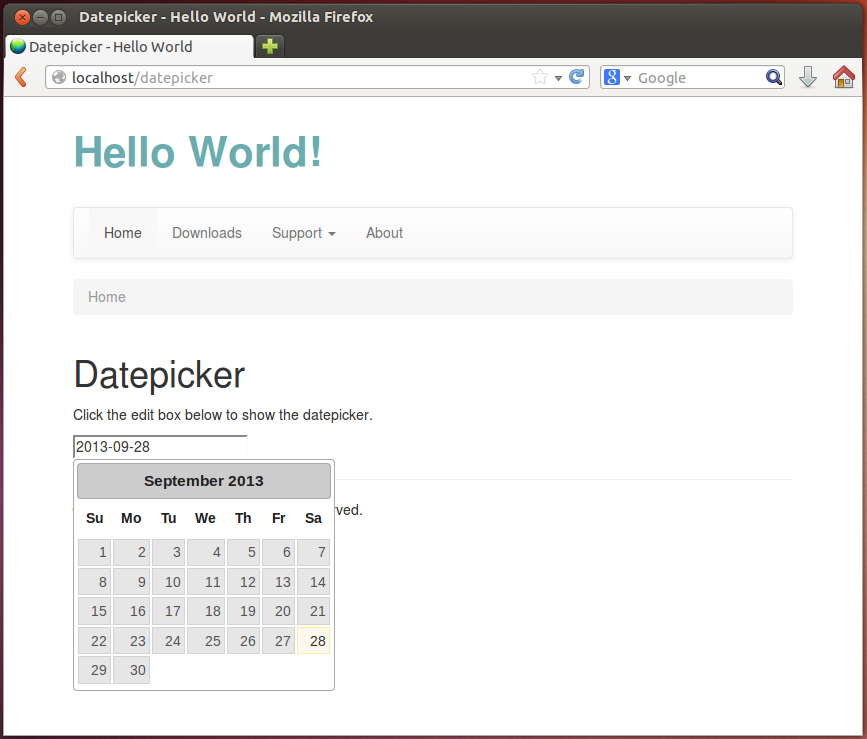
Writing Own View Helpers
Earlier in this chapter, we've created the layout common to all pages of the web site. But we still have a couple of things to do to make the layout fully functional. If you remember, the layout template contains the navigation bar and breadcrumbs. But both navigation bar and breadcrumbs interface components provided by Twitter Bootstrap are currently "static", while they need to be more interactive.
For example, the active item of the navigation bar should depend on the controller's action that is being executed at the moment. And the breadcrumbs should display the path to the currently viewed page. In this section we will make these widgets completely ready for the website with the help of our own view helpers.
A typical view helper is a PHP class deriving from
@Laminas\View\Helper\AbstractHelper base class, which in turn implements the
@Laminas\View\Helper\HelperInterface interface (class inheritance diagram is presented in
figure 6.9).
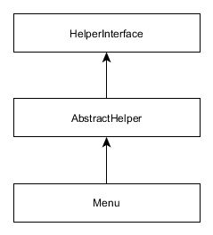
Menu
First, let's implement the Menu view helper class that will render the HTML
code of the navigation bar. The Menu class will provide several methods allowing
to set menu items in a form of array, set the active menu item and render the menu
(see table 6.4 for method summary).
| Method name | Description |
|---|---|
__construct($items) |
Class constructor. |
setItems($items) |
Method for setting the menu items. |
setActiveItemId($activeItemId) |
Method for setting the currently active menu item. |
render() |
Renders the menu. |
renderItem($item) |
Renders a single menu item. |
Table 6.4
The information describing a single menu item will be represented by an array like below (for example, the Home item will have an ID, text label and an URL for a hyperlink):
[
'id' => 'home',
'label' => 'Home',
'link' => $this->url('home')
]
We also want to add the support for dropdown menus as navigation items. For example, in case of the Support dropdown menu having the Documentation and Help sub-items, the item description will take the following form:
[
'id' => 'support',
'label' => 'Support',
'dropdown' => [
[
'id' => 'documentation',
'label' => 'Documentation',
'link' => $this->url('doc', ['page'=>'contents'])
],
[
'id' => 'help',
'label' => 'Help',
'link' => $this->url('static', ['page'=>'help'])
]
]
]
We want to put the Menu class in Application\View\Helper namespace. Thus, start
from creating the Menu.php file in the View/Helper directory under the Application
module's source directory (figure 6.10).
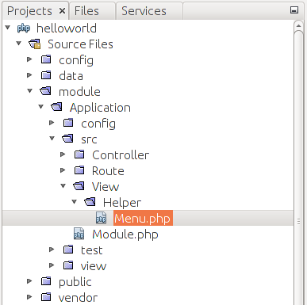
Why do we place the view helper class under module's source directory?
View helpers (unlike
.phtmlview templates) are stored under module'ssrc/directory, because they are usual PHP classes and require to be resolved by a PHP class auto-loading feature. On the other hand, view templates are resolved by the special Laminas class called view resolver, and for this reason, view templates are stored under the module'sview/directory.
Next, create the stub code for the Menu class:
<?php
namespace Application\View\Helper;
use Laminas\View\Helper\AbstractHelper;
// This view helper class displays a menu bar.
class Menu extends AbstractHelper
{
// Menu items array.
protected $items = [];
// Active item's ID.
protected $activeItemId = '';
// Constructor.
public function __construct($items=[])
{
$this->items = $items;
}
// Sets menu items.
public function setItems($items)
{
$this->items = $items;
}
// Sets ID of the active items.
public function setActiveItemId($activeItemId)
{
$this->activeItemId = $activeItemId;
}
}
In the code above, we defined several private fields for the Menu
class. The $items field (line 10) is an array which will store the information
on the menu items; and the $activeItemId field (line 13) is the ID of an active
menu item. The active menu item will be visually highlighted.
In lines 16-19, we defined the class constructor method, which (optionally)
takes the array of items for initializing the menu. An alternative method of
menu initialization is through the setItems() method (lines 22-25). And the setActiveItemId()
method (lines 28-31) sets the ID of the currently active menu item.
Next, let's add the render() method, which will generate HTML code for
the whole navigation bar and return it as a text string:
// Renders the menu.
public function render()
{
if (count($this->items)==0)
return ''; // Do nothing if there are no items.
$result = '<nav class="navbar navbar-default" role="navigation">';
$result .= '<div class="navbar-header">';
$result .= '<button type="button" class="navbar-toggle" ';
$result .= 'data-toggle="collapse" data-target=".navbar-ex1-collapse">';
$result .= '<span class="sr-only">Toggle navigation</span>';
$result .= '<span class="icon-bar"></span>';
$result .= '<span class="icon-bar"></span>';
$result .= '<span class="icon-bar"></span>';
$result .= '</button>';
$result .= '</div>';
$result .= '<div class="collapse navbar-collapse navbar-ex1-collapse">';
$result .= '<ul class="nav navbar-nav">';
// Render items
foreach ($this->items as $item) {
$result .= $this->renderItem($item);
}
$result .= '</ul>';
$result .= '</div>';
$result .= '</nav>';
return $result;
}
In the code above, we produce the HTML markup for the Bootstrap navbar component.
The navbar will use the default theme and will be collapsible (adaptive to
different screen widths). The navbar will not have the brand text in the header.
In lines 22-24, we loop through the menu items and render each one with the renderItem()
method. Finally, the render() method returns the resulting HTML code as a text string.
To finish with creating the Menu class, let's implement the renderItem()
method. This method will produce the HTML code for a single menu item:
// Renders an item.
protected function renderItem($item)
{
$id = isset($item['id']) ? $item['id'] : '';
$isActive = ($id==$this->activeItemId);
$label = isset($item['label']) ? $item['label'] : '';
$result = '';
if(isset($item['dropdown'])) {
$dropdownItems = $item['dropdown'];
$result .= '<li class="dropdown ' . ($isActive?'active':'') . '">';
$result .= '<a href="#" class="dropdown-toggle" data-toggle="dropdown">';
$result .= $label . ' <b class="caret"></b>';
$result .= '</a>';
$result .= '<ul class="dropdown-menu">';
foreach ($dropdownItems as $item) {
$link = isset($item['link']) ? $item['link'] : '#';
$label = isset($item['label']) ? $item['label'] : '';
$result .= '<li>';
$result .= '<a href="'.$link.'">'.$label.'</a>';
$result .= '</li>';
}
$result .= '</ul>';
$result .= '</a>';
$result .= '</li>';
} else {
$link = isset($item['link']) ? $item['link'] : '#';
$result .= $isActive?'<li class="active">':'<li>';
$result .= '<a href="'.$link.'">'.$label.'</a>';
$result .= '</li>';
}
return $result;
}
In the renderItem() method's code above we did the following.
First, we checked whether the item is a dropdown menu or a simple
item (line 10). If the item is a dropdown menu, we walk through the dropdown
menu items, and render each one in turn (lines 21-28). Lines 35-39 contain the
rendering code for the case of a simple item.
To be able to use the Menu view helper in a view template, it is required
to register it in configuration. To do that, add the following view_helpers
key in the module.config.php file:
<?php
return [
// ...
// The following registers our custom view
// helper classes in view plugin manager.
'view_helpers' => [
'factories' => [
View\Helper\Menu::class => InvokableFactory::class,
],
'aliases' => [
'mainMenu' => View\Helper\Menu::class
]
],
];
In the example above, we registered our Menu class as a mainMenu
view helper and will be able to access it from any view template.
Since we plan to use the Menu view helper in the layout view template,
replace the navigation menu markup in layout.phtml file with the following code:
<!-- Navigation bar -->
<?php
$this->mainMenu()->setItems([
[
'id' => 'home',
'label' => 'Home',
'link' => $this->url('home')
],
[
'id' => 'downloads',
'label' => 'Downloads',
'link' => $this->url("application", ['action'=>'downloads'])
],
[
'id' => 'support',
'label' => 'Support',
'dropdown' => [
[
'id' => 'documentation',
'label' => 'Documentation',
'link' => $this->url('doc', ['page'=>'contents'])
],
[
'id' => 'help',
'label' => 'Help',
'link' => $this->url('static', ['page'=>'help'])
]
]
],
[
'id' => 'about',
'label' => 'About',
'link' => $this->url('about')
],
]);
echo $this->mainMenu()->render();
?>
In the code above, we access the registered mainMenu view helper and set
the navigation bar items with the help of setItems() method (line 3).
As a parameter for the method, we pass the array of items.
Then we render the navigation bar with the render() method.
To set the active item for the navigation bar, we can call the setActiveItemId()
method from any view template. For example, add the following code to the beginning of
the view template for the About page (application/index/about.phtml) as follows:
<?php
$this->mainMenu()->setActiveItemId('about');
?>
Now, if you open the About page in your browser, you should see that the About item
of the navigation menu is highlighted with a different color. To display the active item
properly, you need to call the setActiveItemId() method for each page presenting in the
navbar (Home, Downloads, Documentation, etc.) You can see how this is done in the
Hello World sample.
Breadcrumbs
Now that you know how to implement a view helper, let's create the second view
helper for rendering the breadcrumbs. It is completely analogous to the Menu
view helper, so below we just provide the complete code of the Breadcrumbs class:
<?php
namespace Application\View\Helper;
use Laminas\View\Helper\AbstractHelper;
// This view helper class displays breadcrumbs.
class Breadcrumbs extends AbstractHelper
{
// Array of items.
private $items = [];
// Constructor.
public function __construct($items=[])
{
$this->items = $items;
}
// Sets the items.
public function setItems($items)
{
$this->items = $items;
}
// Renders the breadcrumbs.
public function render()
{
if(count($this->items)==0)
return ''; // Do nothing if there are no items.
// Resulting HTML code will be stored in this var
$result = '<ol class="breadcrumb">';
// Get item count
$itemCount = count($this->items);
$itemNum = 1; // item counter
// Walk through items
foreach ($this->items as $label=>$link) {
// Make the last item inactive
$isActive = ($itemNum==$itemCount?true:false);
// Render current item
$result .= $this->renderItem($label, $link, $isActive);
// Increment item counter
$itemNum++;
}
$result .= '</ol>';
return $result;
}
// Renders an item.
protected function renderItem($label, $link, $isActive)
{
$result = $isActive?'<li class="active">':'<li>';
if(!$isActive)
$result .= '<a href="'.$link.'">'.$label.'</a>';
else
$result .= $label;
$result .= '</li>';
return $result;
}
}
To be able to use the Breadcrumbs view helper, register it in the module.config.php file
as follows:
<?php
return [
//...
// The following registers our custom view helper classes.
'view_helpers' => [
'factories' => [
View\Helper\Breadcrumbs::class => InvokableFactory::class,
],
'aliases' => [
'pageBreadcrumbs' => View\Helper\Breadcrumbs::class,
]
],
];
Since we plan to use the Breadcrumbs view helper in the layout view template,
replace the breadcrumbs markup in layout.phtml file with the following code:
<!-- Breadcrumbs -->
<?= $this->pageBreadcrumbs()->render(); ?>
In the code above, we access the pageBreadcrumbs() view helper
and call it with the render() method. The echo operator then outputs
the HTML code of the breadcrumbs.
Finally, you need to pass the breadcrumbs items for each view template. For example, add the following lines in the view template for the About page:
<?php
$this->pageBreadcrumbs()->setItems([
'Home'=>$this->url('home'),
'About'=>$this->url('about'),
]);
?>
Now, if you open the about page, you should see breadcrumbs as in figure 6.11 below. Site users will easily see what page they are visiting right now and will not get lost.
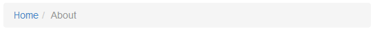
View Models and Page Composition
Earlier, when we wrote action methods for the controller classes, we used the @ViewModel[Laminas\View\Model\ViewModel]
class as a variable container for passing the variables from controller to view template,
and we also used the @ViewModel[Laminas\View\Model\ViewModel] for overriding the default view template name.
But, actually the @ViewModel[Laminas\View\Model\ViewModel] class is more than just a variable container plus view
template name. In fact, it is closely related to the layout and page composition.
The third big capability of the view model class is that it allows for combining several view models in a tree-like structure. Each view model in the tree has the associated view template name and data variables that can be passed to the view template to control the process of rendering.
This feature is internally used by Laminas Framework when "combining" the layout view template and
the view template associated with the controller's action method. Laminas internally creates the
view model for the layout template and assigns it with layout/layout view template name. When
your controller's action method returns the @ViewModel[Laminas\View\Model\ViewModel] object, this object is attached
as a child to the layout view model (see figure 6.12 for an example).
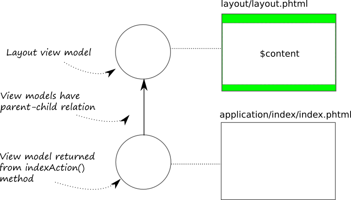
The resulting process of page rendering is the following:
- The child view model is visited first and its associated view template is rendered, and the resulting HTML markup is saved in a temporary storage;
- The output HTML markup of the child view model is passed to the layout view
model as the
$contentvariable. This way the layout view template can render the content specific to the certain page.
Table 6.5 gives the summary of the methods provided by the @ViewModel[Laminas\View\Model\ViewModel] class for the purpose
of page composition:
| Method name | Description |
|---|---|
addChild() |
Adds a child view model. |
getChildren() |
Gets the list of child view models. |
hasChildren() |
Tests if the view model has children or not. |
clearChildren() |
Removes all child view models. |
count() |
Returns count of child view models. |
getIterator() |
Returns the iterator for child view models. |
setTerminal() |
Sets the terminal flag. |
terminate() |
Tests whether the view model is terminal. |
setCaptureTo() |
Sets the name of the variable for capturing the output. |
setAppend() |
Sets the append flag. |
isAppend() |
Tests whether to append this view model to another one. |
Table 6.5. Methods of the ViewModel class for page composition
Below, we provide the brief description of the methods presented in the table above.
The addChild(), getChild(), hasChildren() and clearChildren() methods are used for
(respectively) adding a child view model to the parent one, retrieving the array of view models
attached, testing if the view model is leaf (doesn't have children) and detaching all children.
The setCaptureTo() method allows to set the variable in the parent view template
into which to inject the HTML markup code produced by a child view template. If two child
view models use the same variable, the second one will overwrite the first one.
The setAppend() method can be used when you need to inject the results of two or more
view templates into a single placeholder variable. The next rendered view template will
be appended to the variable's existing content. The view model returned by the controller
is assigned the $content capture variable.
A view model can be marked as terminal with the setTerminal() method. The setTerminal() method
takes a single flag parameter. If true, the view model is considered as terminal (top-level parent)
and the renderer returns the output of the view template to the application, otherwise
its parents are rendered as well. The method terminate() tests whether the view model is terminal
or not.
The
setTerminal()method is very useful in some situations, because with its help you can disable the rendering of the layout view template. If you return from controller the view model marked as terminal, the layout will not be applied. This can be used, for example, when you want to load part of a page asynchronously by an AJAX 10 request and need to insert its HTML code in the DOM tree of an existing page.
Summary
Laminas Framework is shipped with Twitter Bootstrap that is a CSS framework allowing for creating visual appealing and professionally looking web applications. It provides the base CSS rules, the simple layout grid, and useful interface components (like navigation bars, breadcrumbs, pagination, etc.)
In a typical web site, pages have common structure (for example, a typical page may have a navigation bar at the top, the body with page content, and the footer with the copyright information at the bottom). In Laminas Framework, you define this common structure with a view template file called the layout. The layout template may have placeholder(s) in which Laminas puts the content specific to a particular web page.
View helpers are (relatively) simple PHP classes that encapsulate a part of page rendering work. For example, they allow for composing the page of several parts, setting page title and meta tags, and creating the reusable widgets like navigation bar or breadcrumbs.
-
If you are new to CSS, please refer to the excellent W3Schools CSS tutorial by visiting this link. ↩
-
The
<!DOCTYPE>declaration goes first in the HTML document, before the<html>tag. The declaration provides an instruction to the web browser about what version of HTML the page is written in (in our web site, we use HTML5-conformant document type declaration). ↩ -
The UTF-8 allows to encode any character in any alphabet around the world, that's why it is recommended for encoding the web pages. ↩
-
A "compound" page title consists of two parts: the first part ("ZF Skeleton Application") is defined by the layout, and the second part - defined by a particular page - is prepended to the first one. For example, for the About page of your site you will have the "About - ZF Skeleton Application", and for the Documentation page you will have something like "Documentation - ZF Skeleton Application". ↩
-
The @
Placeholder[Laminas\View\Helper\Placeholder] view helper stores the data in PHP session storage. So, in theory, you can even capture content on one page and then render/use it on another one. ↩ -
The DOM (Document Object Model) is a convenient representation of an HTML document structure as a tree of elements. ↩
-
The name @
InlineScriptdoes not fully reflect the capabilities of this view helper. Actually, it can insert both inline and external scripts. The better name for this view helper would beBodyScript, because it is intended for inserting scripts in document body. ↩ -
Heredoc is an alternative string definition method provided by PHP. It works well with multi-line strings. ↩
-
jQuery UI provides a set of "user interface interactions, effects, widgets, and themes"; it is based on jQuery library. jQuery UI is analogous to Twitter Bootstrap in the sense that both provide reusable user interface components. ↩
-
AJAX (stands for Asynchronous JavaScript and XML) is a capability provided by modern browsers which can be used to send data to, and retrieve data from, a server asynchronously (in background) without interfering with the display and behavior of the existing page. ↩